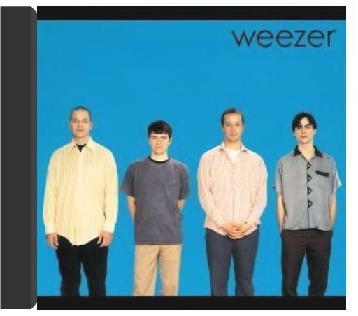

the virgin suicidesthe virgin suicides the virgin suicidesthe virgin suicides  Pas de doute : la musique d'Air ne pouvait être que l'idéal contrechamp aux images du long métrage de Sofia Coppola. D'un côté le film, où cinq adolescentes évoluent dans un univers balisé par un système réfractaire à la contre-culture des années soixante-dix, de l'autre, point trop acidulée pour éviter de provoquer l'écoeurement, la musique qui slalome entre des références arty choisies avec goût : Gainsbourg évidemment, les effluves easy listening de la muzak environnementale et Pink Floyd. Entre la sensualité lancinante d'un groove organique déjà repéré sur Moon Safari et les nappes synthétiques planantes, Air ne choisit pas. Définitivement post. —Philippe Robert  master funkwatsonian institute master funkwatsonian institute Zustand Vinyl:NM, ,Cover:NM (Goldmine Standards) - Sie bestellen:LP:Watsonian Institute,Master Funk.Versand weezerweezer En 1994, à sa sortie, le premier album éponyme de Weezer (dit "Blue Album") fait clairement souffler un vent de fraîcheur sur l'Amérique des college-radios et du rock indépendant, endeuillée coup sur coup par le split des Pixies et la fin abjecte de l'épopée grunge. Sorte d'équivalents américains à ce qu'a pu représenter Blur vis-à-vis de la tradition musicale anglaise, les quatre de Weezer piochent avec malice dans le riche héritage de leur nation. Il rapatrient par exemple la bonhomie mélodique des Beach Boys du début ou la pop fièrement carénée des Cars (Ric Ocasek est d'ailleurs à la production). Dans cet environnement référencé, le mordant des guitares tour à tour punk ou noisy apporte une résonance plus contemporaine. Explicitement mélodique, pourvu d'un esprit distancié qui sera parfaitement mis en image par Spike Jonze (voire le clip de "Buddy Holly" avec l'intrusion du groupe dans la série Happy Days), exsudant une morgue adolescente gentiment apprêtée, cet opus brut et homogène s'impose rapidement comme un sommet de power pop à l'américaine. —Fabrice Privé |


 Made with Delicious Library
Made with Delicious LibraryNancy, State zipflap congrotus delicious library Thomas, Julien